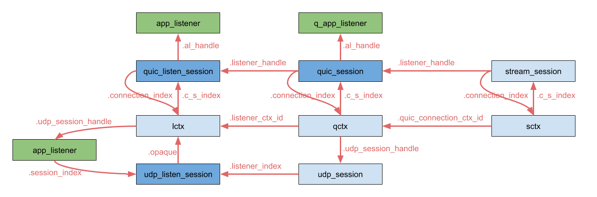

QUIC HostStack¶
The quic plugin provides an IETF QUIC protocol implementation. It is based on the quicly library.
This plugin adds the QUIC protocol to VPP’s Host Stack. As a result QUIC is usable both in internal VPP applications and in external apps.
Maturity
This plugin is under current development: it should mostly work, but has not been thoroughly tested and should not be used in production.
Only bidirectional streams are supported currently.
Getting started¶
A common sample setup is with two vpp instances interconnected #twovppinstances
Ensure your vpp configuration file contains
session { evt_qs_memfd_seg }Then run
session enablein the debug cli (vppctl)
This plugin can be tested in the following cases.
Internal client¶
This application is a simple command to be run on the debug cli to test connectivity & throughput on QUIC over the debug cli (vppctl). It does not reflect reality and is mostly used for internal tests.
Run
test echo server uri quic://1.1.1.1/1234on your first instanceThen
test echo client uri quic://20.20.1.1/1on the second one
Source for the internal client lives in src/plugins/hs_apps/echo_client.c
External client¶
This setup reflects the use case of an app developer using vpp to create a quic client / server. The application is an external binary that connects to VPP via its binary API.
After having setup two interconnected vpps, you can attach the quic_echo binary to each of them.
The binary can be found in
./build-root/build-vpp[_debug]-native/vpp/bin/quic_echoTo run the client & server use
quic_echo socket-name /vpp.sock client|server uri quic://1.1.1.1/1234Several options are available to customize the amount of data sent, number of threads, logging and timing.
The behavior of this app when run with nclient 2/4 is two first establish 2 connections with the given peer, and once everything has been opened start opening 4 quic streams, and transmit data. Flow is as follows.
This allows timing of either the whole setup & teardown or specific phases in assessing the protocol’s performance
Source for the internal client lives in src/plugins/hs_apps/sapi/quic_echo.c
VCL client¶
The hoststack exposes a simplified API call the VCL (blocking posix like calls), this API is used by a sample client & server implementation that supports QUIC, TCP and UDP.
The binaries can be found in
./build-root/build-vpp[_debug]-native/vpp/bin/Create the VCL conf files
echo "vcl { api-socket-name /vpp.sock }" | tee /tmp/vcl.conf]For the server
VCL_CONFIG=/tmp/vcl.conf ; vcl_test_server -p QUIC 1234"For the client
VCL_CONFIG=/tmp/vcl.conf ; vcl_test_client -p QUIC 1.1.1.1 1234"
Source for the internal client lives in src/plugins/hs_apps/vcl/vcl_test_client.c
A basic usage is the following client side
#include <vcl/vppcom.h>
int fd = vppcom_session_create (VPPCOM_PROTO_QUIC);
vppcom_session_tls_add_cert (/* args */);
vppcom_session_tls_add_key (/* args */);
vppcom_session_connect (fd, "quic://1.1.1.1/1234"); /* create a quic connection */
int sfd = vppcom_session_create (VPPCOM_PROTO_QUIC);
vppcom_session_stream_connect (sfd, fd); /* open a quic stream on the connection*/
vppcom_session_write (sfd, buf, n);
Server side
#include <vcl/vppcom.h>
int lfd = vppcom_session_create (VPPCOM_PROTO_QUIC);
vppcom_session_tls_add_cert (/* args */);
vppcom_session_tls_add_key (/* args */);
vppcom_session_bind (fd, "quic://1.1.1.1/1234");
vppcom_session_listen (fd);
int fd = vppcom_session_accept (lfd); /* accept quic connection*/
vppcom_session_is_connectable_listener (fd); /* is true */
int sfd = vppcom_session_accept (fd); /* accept quic stream */
vppcom_session_is_connectable_listener (sfd); /* is false */
vppcom_session_read (sfd, buf, n);
Internal Mechanics¶
QUIC constructs are exposed as follows:
QUIC connections and streams are both regular host stack session, exposed via the API with their 64bits handle.
QUIC connections can be created and destroyed with regular
connectandclosecalls withTRANSPORT_PROTO_QUIC.Streams can be opened in a connection by calling
connectagain and passing the handle of the connection to which the new stream should belong.Streams can be closed with a regular
closecall.Streams opened by peers can be accepted from the sessions corresponding to QUIC connections.
Data can ba exchanged by using the regular
sendandrecvcalls on the stream sessions.
Data structures¶
Quic relies on the hoststack constructs, namely applications, sessions, transport_connections, and app_listeners. When listening on a port with the quic protocol, an external application :
Attaches to vpp and register an
applicationIt creates an
app_listenerand aquic_listen_session.The
quic_listen_sessionrelies on atransport_connection(lctx) to access the underlyingudp_listen_sessionthat will receive packets.Upon connection request, we create the same data structure (
quic_session,qctx,udp_session) and pass a handle to thequic_sessionin the accept callback to acknowledge the creation of a quic connection. All further UDP datagrams for the peers at each end of the connection will be exchanged through theudp_sessionUpon receiving a Stream opening request, we create the
stream_sessionand its transportsctxand pass the handle to thestream_sessionback to the app. Here we don’t have any UDP datastructures, as all datagrams are bound to the connection.
Those structures are linked as follows :
